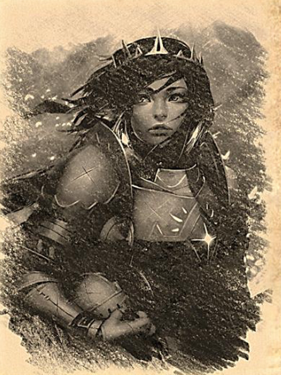

Gegenstände
Kampf am Tsolenka Pass
Wo: Altes Handelshaus Wert: 100 Pf.
Schlacht an den Toren von Tsolenka: Die Legende der Schildmaiden

Errichtung der Tore von Tsolenka durch die Ursari
Als der Große Krieg über das Land hereinbrach, errichteten die Ursari, die den Fey treu ergeben waren und starke Bindungen zu Argynvost hatten, die Tore von Tsolenka, um sich vor Eindringlingen und möglichen Überfällen auf den Bernsteintempel zu schützen. Denn die Ursari, die den Bernsteintempel errichteten, wussten, dass die Welt verloren gehen könnte, wenn die Dunkelheit freigesetzt würde.
Malduk: Graf Argynvost hatte den Bau des Bernsteintempels und die Tore von Tsolenka beauftragt, nachdem die Terg ins Land einfielen und der Graf von Habsburg fiel.
Ursari-Männer waren Steinmetzen, Ursari-Frauen waren Soldaten, die mutigsten wurden Schildmaiden
Die mutigsten des Ursari-Volkes waren die weiblichen Krieger, die als Schildmaiden bekannt waren. Als die Ursari-Männer sich dem Steinmetzhandwerk zuwandten, übernahmen die Frauen des Dorfes die Rolle der Wächter, Beschützer und Soldaten.
Die Schildmaiden schlagen die Truppen des Graf Strahd mehrfach zurück
Als die Tore von Tsolenka fertiggestellt waren, wurden die Schildmaiden von Bârgău beauftragt, die Tore von Tsolenka zu bewachen. Sie verteidigten die Tore von Tsolenka während des Großen Krieges, und die Truppen des Dunklen Grafen wurden wiederholt zurückgeschlagen.
Einige glaubten, dass die Schildmaiden von der Bergfey mit der Kraft der Stärke ausgestattet wurden, denn bei jedem Sonnenaufgang und Sonnenuntergang beten die Schildmaiden zur Bergfey.
Graf Strahd zerstört Bârgău
Der Dunkle Graf schickte seine Truppen aus, um das Dorf Bârgău zu zerstören und die Dorfbewohner tief in den verschneiten Bergwald zu treiben. Die Schildmaiden an den Toren von Tsolenka eilten ihrem Dorf zu Hilfe, aber es war zu spät. Das Dorf wurde zerstört, einschließlich des Tempels der Fey. Viele der Männer und Kinder wurden getötet oder von den Truppen des Dunklen Grafen versklavt.
Graf Strahd verflucht Bârgău zur Unsterblichkeit
Der Dunkle Graf verfluchte das Dorf und das Volk der Ursari mit der Unsterblichkeit, die im Dorf verankert und für die Zeit verloren war. Jeder Ursari, der sich aus den Ruinen von Bârgău herauswagt, wird schnell altern und sterben. Die verbliebenen Dorfbewohner waren in ihrem zerstörten Dorf gefangen, verflucht zur Unsterblichkeit oder zum Tod, wenn sie es verließen.

Die Schildmaiden verlassen das Dorf, obwohl sie sterben würden
Die Schildmaiden wussten, dass sie altern und sterben würden, wenn sie zu den Toren von Tsolenka zurückkehrten, aber sie konnten die Tore von Tsolenka nicht unbewacht lassen.
Die Truppen des Dunklen Grafen marschierten in einem letzten Versuch auf die Pforte.
Sie glaubten, das Tor sei unbewacht oder die Schildmaiden seien zurückgekehrt und würden in ihrem Alter leicht zu besiegen sein.
Die Bewachung der Tore von Tsolenka
Zusammen mit Prinz Vernon, dem Sohn des Grafen von Habsburg, und einigen Rittern von Argynvost leisteten die Schildmaiden ein letztes Gefecht vor den Toren von Tsolenka. Es war die blutigste Schlacht des Großen Krieges. Die Streitkräfte des Dunklen Grafen waren den Streitkräften der Schildmaiden zahlenmäßig hundert zu eins überlegen. Die Schildmaiden und ihre Verbündeten hielten den Truppen des Dunklen Grafen vier Tage lang stand. Prinz Vernon starb in der Schlacht bei der Verteidigung der Tore und viele der Ritter von Argynvost fielen. Der Fluch erfasste die Schildmaiden, als sie im Alter die Tore bewachten und auf den Wällen Wache hielten. Im Morgengrauen und in der Abenddämmerung beteten sie zu der Bergfey, dass die Tore von Tsolenka halten sollten.
Der letzte Vorstoß und der alte Zauberer
Am fünften Tag schickte der Dunkle Graf seine Truppen erneut aus, um das Tor einzunehmen, es war der letzte Vorstoß. Die Schildmaiden wussten, dass sie nicht länger standhalten konnten, und riefen den Ältesten ihres Dorfes, einen alten Zauberer, an, um einen Zauber zu sprechen, der die Tore mit grünem Feuer schützen sollte. Der alte Zauberer sagte, dass es Stunden dauern würde, einen so mächtigen Zauber zu wirken, er würde Zeit und Schutz brauchen.
Die Schildmaiden marschierten ein letztes Mal aus den Toren von Tsolenka und bildeten einen Schildwall vor den Toren, als die Streitkräfte des Dunklen Grafen in Massen auf die Tore stürzten.
Sechs Stunden lang hielten die alternden Schildmaiden das Tor und gaben dem alten Zauberer Zeit, den grünen Feuerzauber zu wirken, um das Tor zu schützen. Sie wehrten die Truppen des Dunklen Grafen ab, und in der siebten Stunde fielen die wenigen verbliebenen Schildmaiden auf die Knie, da sie nicht mehr die Kraft hatten, ihre langen Schwerter zu schwingen oder ihre Schilde zu halten. Sie waren in ihren goldenen Jahren gealtert und sahen nun aus wie alte Frauen. Eine nach der anderen fiel langsam in den Schnee und verwandelte sich in Knochen und Staub, doch die Tore von Tsolenka hielten stand und wurden von den Truppen des Dunklen Grafen während des Großen Krieges nie durchbrochen.
Malduk: Lebte zu diesem Zeitpunkt Graf Argynvost noch?

.png)